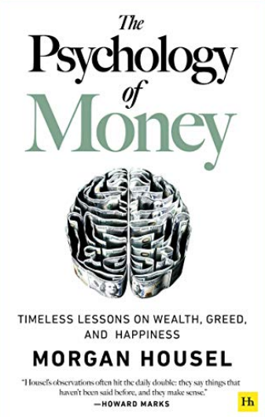
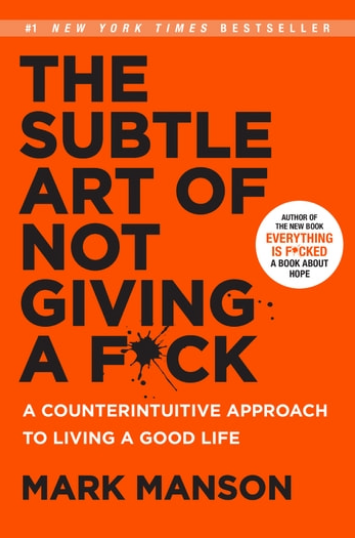
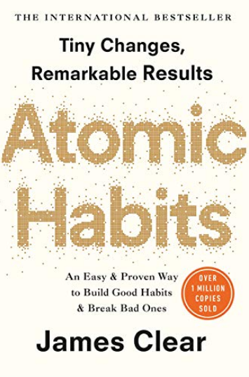
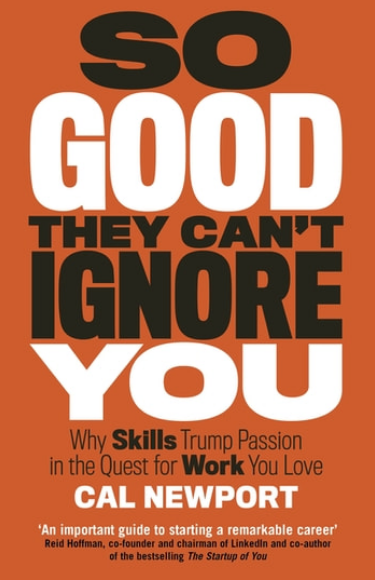
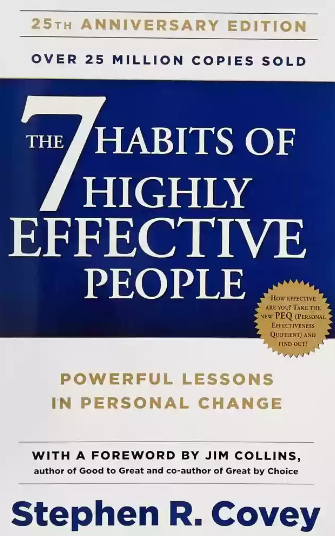

Best Life Advice Books
Reading self-improvement books can significantly enhance one's outlook towards life. However, there are thousands of self-help books out there and a lot of them give generic advice on how one should live. Unfortunately, there is lack of scientific validity to a lot of self-help advice, and hence the burden of checking and validating what works falls on the reader. Because of this, we must be very choosy in picking up self-help books. Here, I have compiled reviews of those books which I find truly good and actionable. They belong to different domains like emotional intelligence, personal finance, productivity, career advice, etc and give nuanced advice in their respective one.
The Psychology of Money, by Morgan Housel

This is one of the best books in the personal finance genre. The core tenet on which the book is based is that managing money has more to do with human psychology than finance. It is divided into 19 chapters, each one giving a simple but important message about money and the interesting ways in which people perceive it.
It will make you ask some fundamental questions like why one needs to earn money in the first place, or what's the biggest advantage you get when you have money, or what things in life deserve being pursued with our money. Books which help the reader go a level deeper into their way of life are always better than those which simply assume what the reader's goal is (such as "being rich"), and this is precisely of the former kind. Each chapter gives a separate lesson and they can be read in any order. It's an excellent read for anyone wishing to get some advice on how to deal with money. You'll understand the importance of saving, and investing. You'll also realise some traps people fall into and get insights into what money can (and cannot) give us.
What I liked the most in this book:
- The book is written in very simple language. It almost talks to the reader like a friend, and at the same time gives some serious advice.
- Approaching personal finance through a human angle (psychology, behavior, evolution and even philosophy) rather than through numbers and technical jargon
- The author's personal strategy with managing his finances, at the end, is like a cherry on the cake!
Who should read this book:
- Anyone even remotely interested in personal finance and/or psychology
- Anyone trying to impress others with their money
- Anyone planning to buy a car, a house or make some big commitment with their money
- Anyone wanting some "guide-posts" on how to manage money, without scratching their heads a lot
- Anyone wanting to get clarity on what they should aim for
- Anyone wanting to understand their perception and also how the world works with money
The Subtle Art of Not Giving A F*ck, by Mark Manson

It’s a guide to understanding priorities (what to give a f*ck about and what not to), a book about values in life. It attacks the usual self-help culture of “always be positive” and “always be happy”. Rather than telling you how to be happy, it makes you question a more general and important question of whether happiness is really the most important thing in life. Unlike usual self-help books, which paint an unrealistic rosy picture of the world, this book will teach you to take your life’s challenges head-on and grow from your pain, questioning what success means in the first place and how you should define it. It is not a feel-good book. You'll probably feel bad at points. But in the long run this book can change your life.
A must-read for:
- Anyone wondering how to be happy
- Anyone wanting to get clarity on their life goals, what to strive for
- Anyone feeling stuck in a boring, mundane lifestyle
- Anyone who feels that the world is extremely unfair to them
- Anyone waiting for the "hidden undiscovered genius" to come out and win the world
- Anyone consuming a lot of self-help content but not seeing their life improving
- Anyone feeling that they are not getting the rewards they deserve
- Anyone who feels that they do not have the motivation to pursue anything good
What I liked the most in this book:
- The style of writing: extremely hard-hitting, grab-your-shoulders-and-shake-you-hard types
- Ruthless acceptance of reality as it is, without any irrational beliefs
- The way he has connected all the different areas of life ultimately to the same tenet of knowing what to give a f*ck about.
Atomic Habits, by James Clear

This wildly famous book is about how important tiny changes (atomic habits) are instrumental in achieving remarkable results. It shows you how little (but non zero and consistent!) effort is needed to achieve goals and gives simple, implementable steps to build good habits and break bad ones. It discusses the compounding nature of habits and how habits form the basis of a life well lived. It mentions four broad laws of behavior change in order to build good habits:
- Making it obvious
- Making it attractive
- Making it easy
- Making it satisfying
Habits work in a cycle of cue, craving, response and reward, which the book explains, alongwith the underlying mechanism of dopamine and what we can do in order to influence our own behavior in positive ways. It is well researched, well written, and might change your attitude towards self-improvement and life in general. It does not tell you to try any path-breaking things to achieve your goals, rather it tells you how starting small and being consistent gradually pays off in the long run, along with some actionable tips towards the same.
What I liked the most in this book:
- No flashy stuff, but simple actionable advice which one can implement step by step
- Examples of habit building distributed throughout the book
- The author's own story at the beginning and how he used these concepts to bounce back from a difficult situation
So Good They Can't Ignore You, by Cal Newport

This book gives extremely practical career advice. Most people, especially young people (like me) fret over what career they should pursue. They are worried about not having found their ‘calling’ or ‘passion’. But this book argues that passion is not something to be found before deciding what to pursue. Rather if we get good at whatever we are doing, and find a sense of growth, then passion for the work automatically follows. That is the central point of this book. It tells us to forget following our passion for a while and rather get so good at what we are doing that we cannot be ignored. What this means is we need to develop some rare and valuable skills which the author calls “career capital” and then passion will follow as a by-product.
The book explains what characteristics make a particular job satisfying. What is the secret behind an amazing work life? It tries to answer that important question
What I liked the most in this book:
- The examples of people the author has used to deliver his points. These are people who are neither famous, nor madly rich, nor even highly "successful" in the conventional sense of the word. Yet, they have managed to find work that they love and build an awesome work life.
- Challenging the modern cult of needing to find one's "passion" at the very beginning of an endeavour
- The author discussing his own journey at the end, with the thought process behind his life decisions
A must-read for:
- Anyone wanting to start a new career or a startup
- Anyone feeling bored in their job
- Anyone feeling anxious about not having found a big goal to work towards in life
- Anyone wanting to improve their work life or their skills
- Anyone who likes to learn from other people's examples
- Anyone worried too much about other people's and society's opinions about career and success
The Seven Habits of Highly Effective People, by Stephen Covey

This book is a bit "traditional" compared to others listed in this article, but it contains timeless advice. It is about productivity and effectiveness at work and in life. In a way, it offers an entire philosophy expressed in terms of the seven habits:
- Be proactive
- Begin with the end in mind
- Put first things first
- Think Win-Win
- Seek first to understand, then to be understood
- Synergize
- Sharpen the saw
There is a lot of wisdom in this book and it is difficult to summarise in short but the key areas of focus are responsibility, values, principle-centred living, leadership, management, productivity, time-management, relationships and conflicts, empathetic communication and more; basically "effectiveness" or flourishing. The first three habits are about achieving independence, the next three are about interdependence, and the last one is a general habit required to keep the other habits at play.
What I liked the most in this book:
- Examples given by the author to deliver his points are really good
- A complete framework to think about one's life and work
- Timelessness and universality of the concepts
Who should read this book:
- Anyone who feels like their life is being lived, rather than they living their life
- Anyone feeling stagnant or stuck in life
- Anyone struggling to deal with other people
- Anyone wanting a kick of motivation to get back on track with their work, or start something new